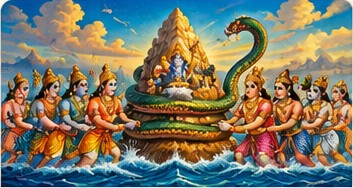
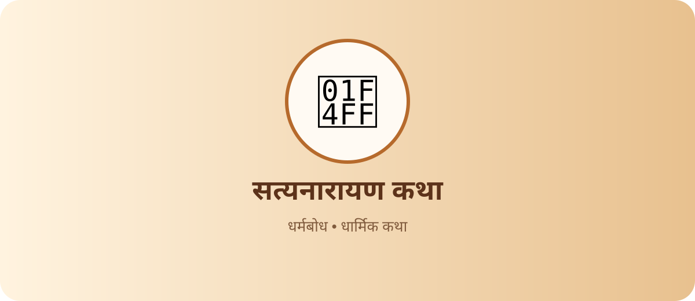

पौराणिक कथा
🌺 समुद्र मंथन की कथा
समुद्र मंथन, कूर्म अवतार और अमृत कलश का प्रसिद्ध प्रसंग।
पूरी कथा पढ़ेंॐ • सनातन ज्ञान परंपरा
रामायण, श्रीकृष्ण, शिव-शक्ति, भक्ति और व्रत से जुड़ी प्रेरणादायक कथाएँ सुंदर चित्रों के साथ पढ़ें।
11 कथाएँ

समुद्र मंथन, कूर्म अवतार और अमृत कलश का प्रसिद्ध प्रसंग।
पूरी कथा पढ़ेंभक्त प्रह्लाद की अटूट श्रद्धा और भगवान नरसिंह के प्राकट्य की कथा।
पूरी कथा पढ़ेंकंस के अत्याचार, देवकी-वसुदेव और भगवान कृष्ण के जन्म की कथा।
पूरी कथा पढ़ेंराजा दशरथ, अयोध्या और मर्यादा पुरुषोत्तम श्रीराम के जन्म का प्रसंग।
पूरी कथा पढ़ेंबाल हनुमान के साहस, शक्ति और सूर्य को फल समझने का प्रसंग।
पूरी कथा पढ़ेंनिष्ठा, बुद्धि और कठिन परिस्थिति में साहस की प्रेरक कथा।
पूरी कथा पढ़ें
दूसरा शब्द खोजें या “सभी कथाएँ” चुनें।
कथा के प्रसंग, पात्रों और उससे मिलने वाली सीख को समझें। अलग-अलग ग्रंथों और क्षेत्रीय परंपराओं में कथा के विवरण भिन्न हो सकते हैं; यहाँ कथाओं को सरल हिंदी में परिचयात्मक रूप से प्रस्तुत किया गया है।